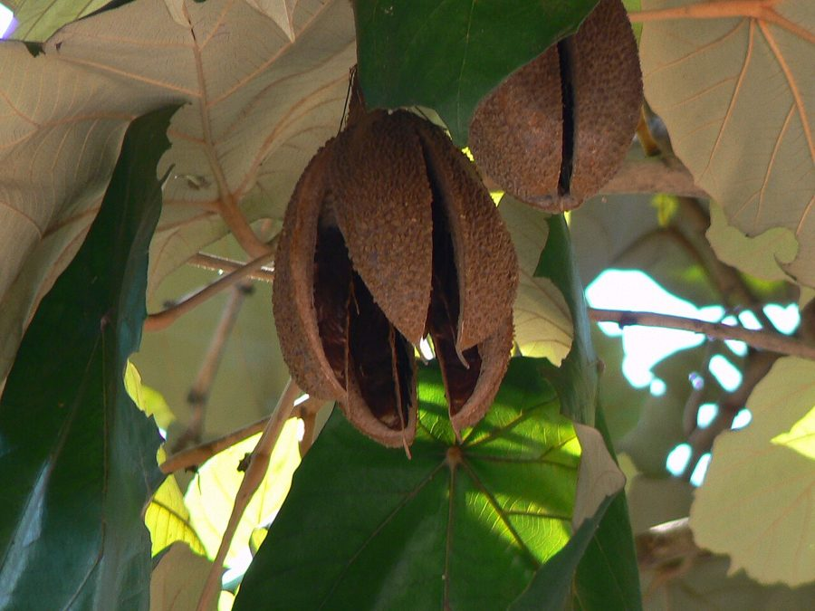

हाथीपायलाHathipaila
Indopiptadenia oudhensis · Fabaceae · FLR-0317

- Scientific name वैज्ञानिक नाम
- Indopiptadenia oudhensis (Brandis) Brenan
- Family कुल
- Fabaceae
- Hindi हिंदी
- हाथीपायला
- Local names स्थानीय नाम
- hathipaila, hathipaila tree, oudh piptadenia, gainti
- Status here यहाँ की स्थिति
- native
- Movement आवागमन
- Resident, here all year
- Known from कहाँ दर्ज
- Others have published records from the wider Awadh–Purvanchal plain, none yet from Basti–Ayodhya अवध–पूर्वांचल से दूसरों के प्रकाशित अभिलेख, बस्ती–अयोध्या से अभी नहीं
- IUCN IUCN
- not evaluated
- Review समीक्षा
- not yet reviewed
When to look कब देखें
Present all year. साल भर मौजूद।
Uses and possibilities उपयोग और संभावनाएँ
“Traditional medicine” means a documented traditional use, not a claim that it works. Nothing on this page is medical advice.
Drawn from the documented uses in the profile below, where each is labelled traditional, current or a research lead. All uses →
Tell it apart from इनसे अलग पहचानें
हाथीपायला / Hathipaila
Indopiptadenia oudhensis (Brandis) Brenan — Fabaceae
हाथीपायला — अवध की तराई और नेपाल की निचली शिवालिक पहाड़ियों का एक अत्यंत दुर्लभ और विशेष पेड़, जो दुनिया में केवल इसी क्षेत्र में पाया जाता है। इसके तने का निचला हिस्सा हाथी के पैर की तरह चौड़ा और भारी दिखाई देता है, जिससे इसका नाम 'हाथीपायला' पड़ा। यह खड़ी चट्टानों और बीहड़ों की कगारों पर उगता है और पीले-सफ़ेद घने स्पाइक जैसे फूलों से महकता है।
Quick Identification त्वरित पहचान
| Feature | Description |
|---|---|
| Habit | Small to medium-sized tree 6–12 m tall with a crooked bole (Duthie 1903) |
| Trunk Base | Basal trunk prominently swollen and fluted, resembling an elephant's foot |
| Bark | Smooth, yellowish-grey or reddish-brown, peeling off in thin papery scales |
| Leaves | Bipinnate, with 2 pairs of pinnae, each bearing 4–8 pairs of rhomboid-trapezoid leaflets (Duthie 1903) |
| Flowers | Minute, yellowish-white, borne in dense cylindrical spikes 3–6 cm long (Duthie 1903) |
| Pods | Flat, thin, straight, 20–30 cm long, 2–3 cm broad, stalked, chestnut-brown (Duthie 1903) |
Field tip: Look on steep sandstone precipices and gorge edges in the northern tarai for a small tree with an elephantine fluted trunk base, papery bark, and large flat hanging seedpods.
हिंदी — कैसे पहचानें: हाथी के पाँव जैसा फूला हुआ तना, पतली छाल जो पपड़ी बनकर छूटती है, दो जोड़ी शाखाओं वाली संयुक्त पत्तियाँ, और लंबी-चौड़ी चपटी फलियाँ।
Morphology शारीरिक संरचना
Biometrics (Duthie 1903; Brandis 1906):
| Measurement | Range |
|---|---|
| Tree height | 6–12 m (Duthie 1903) |
| Basal trunk diameter | 40–90 cm (Brandis 1906) |
| Pinnae pairs | 2 pairs (Duthie 1903) |
| Leaflet length | 2.5–5.0 cm (Duthie 1903) |
| Leaflet width | 1.5–3.5 cm (Duthie 1903) |
| Spike length | 3–6 cm (Duthie 1903) |
| Pod length | 20–30 cm (Duthie 1903) |
| Pod width | 2.0–3.0 cm (Duthie 1903) |
Trunk and bark: Bole short, often twisted, characteristically buttressed or swollen at ground level. Bark smooth, light greyish-yellow to reddish, exuding gum when injured.
Leaves: Alternate, bipinnate with a slender main rachis bearing a gland between the lower pinnae. Pinnae usually two pairs. Leaflets unequal-sided, rhomboid-elliptic, glaucous beneath, obtuse or emarginate at apex.
Inflorescence and Flowers: Flowers small, sessile, bisexual, clustered in dense solitary or fascicled cylindrical axillary spikes. Calyx campanulate; petals five, lanceolate. Stamens ten, free. The fruit is an elongate, flat, glabrous legume containing 8–15 compressed seeds.
हिंदी: तने का आधार असामान्य रूप से चौड़ा होता है। पत्तियाँ संयुक्त होती हैं और हर पत्ती पर छोटे चपटे पर्णक होते हैं। फलियाँ बहुत लंबी और चपटी होती हैं।
Behaviour & Ecology व्यवहार एवं पारिस्थितिकी
Indopiptadenia oudhensis is a rupicolous chasmophyte—a tree specialised to live on near-vertical sandstone escarpments, river gorges, and crumbling conglomerate cliffs. Its massive swollen root crown wedges into rock fissures, anchoring the tree against monsoonal slippage.
As a legume, it forms root nodules that fix atmospheric nitrogen in deficient skeletal soils. Flowering occurs during the intense dry heat of April and May, attracting foraging bees and wasps across cliff faces. Seeds ripen within durable hanging pods that rattle in winter winds, releasing compressed winged seeds that glide down gorge draughts.
हिंदी: यह पेड़ खड़ी चट्टानों की दरारों में अपनी मजबूत जड़ें जमाकर उगता है। इसकी जड़ों में नाइट्रोजन संचित करने वाली ग्रंथियां होती हैं जो बंजर कगारों पर मिट्टी की उर्वरता बढ़ाती हैं।
Life Cycle / Phenology जीवन चक्र एवं ऋतुचक्र
| Period | Phenological Event |
|---|---|
| February–March | Foliage withers and drops; trees stand largely leafless along rocky cliffs |
| April–May | New leaves emerge simultaneously with fragrant yellowish cylindrical flower spikes |
| June–September | Pods set and elongate through the monsoon rains; seeds develop within |
| October–January | Flat chestnut-brown legumes mature, dry out, and release flat seeds in dry winds |
Seedlings establish on narrow ledges where fine organic debris accumulates, sending deep taproots into clefts before the upper shoot expands.
हिंदी: बसंत में पत्तियाँ गिरती हैं। गर्मी में फूल खिलते हैं और बरसात भर फलियाँ बढ़ती हैं। जाड़ों में फलियाँ सूखकर चटकती हैं और बीज बिखरते हैं।
Associated Species / Interactions संबद्ध प्रजातियाँ एवं पारस्परिक क्रियाएं
- Pollinators: Native solitary bees and Asian Honey Bee visit the nectar-producing floral spikes.
- Cliff Associates: Shares dry escarpments with rupicolous ferns and Indian Jujube in foothill scrub.
- Seed Predators: Seed-boring bruchid beetles attack mature seeds inside drying pods.
हिंदी: इसके फूलों पर जंगली मधुमक्खियाँ मँडराती हैं और चट्टानी दरारों में यह अन्य झाड़ियों के साथ सहअस्तित्व में रहता है।
Pests and Diseases कीट एवं रोग
- Bruchid pod weevils heavily infest dry legumes on the tree, destroying stored seed viability.
- Leaf rust occasionally infects foliage during prolonged humid monsoon spells.
- Wood-decaying polypores colonise fire-scarred or aging basal boles.
हिंदी: फलियों के अंदर घुन जैसे कीट बीजों को खा जाते हैं, जिससे बीजों के अंकुरण की क्षमता प्रभावित होती है।
Agricultural / Human Relevance कृषि एवं मानवीय उपयोगिता
Traditional and Ethnobotanical Uses:
- Soil conservation. Because of its unique ability to colonise and bind precarious cliff faces and ravines, it plays an indispensable ecological role in preventing hillside erosion.
- Gum. An amber-coloured gum exudes from wounds in the trunk, historically collected by forest dwellers.
- Traditional medicine. Local Tharu and pastoral communities historically used bark extracts for wound cleansing and skin swellings in folk veterinary care. This is a record of traditional use, not medical advice.
- Fodder and fuel. The foliage is occasionally browsed by goats on accessible lower slopes; dead wood provides firewood.
Today. It is a globally significant flagship species for conservation in the Terai Arc Landscape, representing a monotypic genus endemic to this narrow border zone.
हिंदी: हाथीपायला खड़ी चट्टानों को टूटने से रोकने में अत्यंत उपयोगी है। इसके तने से गोंद निकलता है और थारू समुदाय द्वारा इसकी छाल का उपयोग घाव धोने में किया जाता रहा है।
Expected Locally स्थानीय संभावना एवं उपस्थिति
Not a field record. Written from published accounts for eastern Uttar Pradesh. No confirmed local sighting yet — if you have seen it, that is what the atlas needs.
अभी तक स्थानीय पुष्टि नहीं। यह विवरण प्रकाशित स्रोतों से है, किसी अवलोकन से नहीं।
Expected in eastern Uttar Pradesh along the northernmost hilly sandstone outcrops of the tarai belt, particularly in northern Gonda, Balrampur, and Shravasti borders adjacent to Nepal. GBIF holds published records from the wider Awadh–Purvanchal plain, none yet from Basti–Ayodhya. A first local record would be a dated photograph of the foliage, flowers, or fruit, submitted with locality details through the project's About page.
Distribution भौगोलिक वितरण
Global range: Strictly endemic to a narrow zone along the Himalayan foothills of northern India (Uttar Pradesh and Uttarakhand) and southern Nepal.
In India: Confined to the sub-Himalayan Siwalik belt from Kumaon eastwards through Bahraich, Gonda, Balrampur, and Gorakhpur border tracts (Brandis 1906).
In Uttar Pradesh: Originally described from the forests of "Oudh" (Gonda and Bahraich) by Dietrich Brandis; highly localised on rocky escarpments (Duthie 1903).
In Basti district / eastern UP: Expected along the northern forested border ravines and sandstone bluffs bordering the Nepal foothills.
हिंदी: यह वृक्ष पूरी दुनिया में केवल अवध की तराई और नेपाल की सीमावर्ती शिवालिक पहाड़ियों में ही पाया जाता है।
Research Questions शोध प्रश्न
- Are relict populations of Indopiptadenia oudhensis surviving on river bluffs in northern Gonda or Balrampur? / क्या उत्तरी गोंडा या बलरामपुर में नदी के कगारों पर हाथीपायला के पेड़ अब भी बचे हुए हैं?
- What percentage of wild seed crops are lost to bruchid beetle predation before pod dehiscence? / फलियों के पकने से पहले कितने प्रतिशत बीज घुन कीटों द्वारा नष्ट हो जाते हैं?
- What is the genetic diversity among isolated cliff-face populations in Uttar Pradesh? — Collect leaf samples across remaining stands for conservation genetics.
- How does the elephantine swollen bole develop in cultivated saplings outside rock crevices? — Observe seedling morphology in forestry nursery trial beds.
- What do local Tharu elders know regarding traditional uses or names for this tree? / स्थानीय थारू समुदाय के वरिष्ठ लोग इस वृक्ष के पारंपरिक नामों और उपयोगों के बारे में क्या बताते हैं?
Similar Species समान प्रजातियाँ
| Species | How to tell apart | हिंदी |
|---|---|---|
| Amaltas (Cassia fistula) | Pinnate leaves with large ovate leaflets; long pendulous yellow flower racemes | पत्तियाँ बड़ी, पीले लटकते फूल |
| Kasai (Bridelia retusa) | Simple leaves with straight parallel veins; thorny young trunk; small drupes | पत्तियाँ सरल, तने पर कांटे |
| Safed Kikar (Senegalia leucophloea) | Armed with straight white spines; leaves smaller, multi-pinnate; flowers in heads | सफेद कांटे, पत्तियाँ बहुत बारीक |
Field rule: Swollen fluted elephant-foot trunk base, papery peeling bark, bipinnate leaves with rhomboid leaflets, and long flat chestnut pods hanging from cliff-clinging branches distinguish Indopiptadenia oudhensis.
Taxonomy & Classification वर्गिकी एवं वर्गीकरण
Original description. First described as Piptadenia oudhensis by Dietrich Brandis in 1874 in The Forest Flora of North-West and Central India, p. 168, based on specimens collected in the forests of Oudh. Transferred to the new monotypic genus Indopiptadenia by J.P.M. Brenan in 1955 in Kew Bulletin 10(2): 178.
Subspecies. Monotypic — Indopiptadenia oudhensis is the sole species in the genus Indopiptadenia.
Family and order placement. Placed in the legume family Fabaceae, subfamily Caesalpinioideae (formerly Mimosaceae), in the order Fabales.
Phylogenetic notes. Indopiptadenia is an ancient relict lineage within the mimosoid clade, morphologically distinct from African and Neotropical Piptadenia species.
IUCN status rationale. Not evaluated in the master expansion list, though regional conservation assessments consider it vulnerable or endangered due to its narrow endemic range and cliff habitat destruction.
हिंदी: इसकी खोज डाइट्रीच ब्रांडिस ने अवध के जंगलों में की थी और 1955 में वैज्ञानिक ब्रेनन ने इसे इंडोपिप्टाडेनिया नामक एक अलग वंश में रखा।
Photo Gallery छायाचित्र दीर्घा
No photos yet — add field photos to media/species/hathipaila/ and run node scripts/sync_photos.js.
Photos needed आवश्यक फोटो
- [ ] Elephant-foot swollen base of the trunk on a rocky cliff (चट्टान पर हाथी के पाँव जैसा फूला हुआ तना)
- [ ] Bipinnate leaf branch showing rhomboid leaflets (पत्तियों और पर्णकों की संरचना)
- [ ] Large flat chestnut-brown seed pods hanging from twigs (शाखाओं से लटकती लंबी चपटी फलियाँ)
References संदर्भ सूची
- Brenan, J.P.M. (1955). Notes on Mimosoideae: I. Kew Bulletin, 10(2), pp. 178–179.
- Brandis, D. (1874). The Forest Flora of North-West and Central India, p. 168. Wm. H. Allen & Co., London.
- Duthie, J.F. (1903). Flora of the Upper Gangetic Plain and of the Adjacent Siwalik and Sub-Himalayan Tracts, vol. 1, pp. 308–309. Government Printing, Calcutta.
- Brandis, D. (1906). Indian Trees, p. 261. Archibald Constable & Co., London.
- Baker, J.G. (1878). The Flora of British India, vol. 2, pp. 289–290. L. Reeve & Co., London.
- GBIF Occurrence Data — Indopiptadenia oudhensis (Brandis) Brenan, India (2025).
Source file: species/flora/trees/hathipaila.md